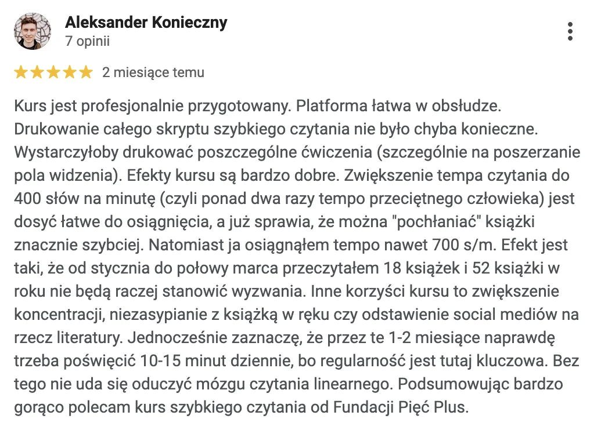
Kurs dla zajętych ludzi, którzy chcą czytać więcej40% ludzi przeczyta w życiu mniej książek, niż widzisz poniżej
Po kursie Szybkie Czytanie Online możesz przeczytać je wszystkie w tydzień
Zaraz Ci udowodnię, że potrafisz tak czytać. W 15 minut ze mną przyspieszysz dwukrotnie. Za miesiąc będziesz czytać tak szybko jak ja.
Powalczmy o Twoje czytanie
Chcesz czytać, ale nie masz na to przestrzeni.
Czytanie = czas + skupienie. Świat bombarduje Cię lawiną powiadomień, mailingów, wiadomości. Informacji jest coraz więcej a czasu coraz mniej i to się nie zmieni.
Szkolne czytanie to za mało. To, w jaki sposób teraz czytasz wystarczyło wprawdzie na wymęczenie lektur ale zupełnie nie przystaje do współczesnego świata.
Chcesz naprawdę czytać więcej?
Nauczysz się tego w moim kursie Szybkie Czytanie Online
Kto do Ciebie mówi
Dlatego wiem, czemu tu jesteś.
Nazywam się Piotr Starzyński, nauczyłem już 67 500 osób, jak czytać regularnie, szybko i w skupieniu. Zajmuję się tym tematem od 12 lat i jestem przewodniczącym polskiego WABA League (Światowej Ligi Sportów Umysłowych) oraz złotym medalistą na międzynarodowych zawodach w czytaniu.
chcesz czytać więcej, szybciej. I w pełnym skupieniu.
Po pierwsze: szkoła
Zacznijmy od tego, że czytasz wolno tylko dlatego, że tak Cię nauczono i przyzwyczajono w szkole.
Po drugie: magia albo oszustwo
Drugi powód jest taki, że „szybkie czytanie” do tej pory niewiele Ci mówiło i brzmiało jak magia albo oszustwo.
Dlatego: fakty i ćwiczenia
Dlatego u mnie wszystko opiera się na faktach i ćwiczeniach, które działają już po pierwszych 15 minutach kursu.
Pamiętasz stos książek na początku strony?
Sprawdźmy, czy miałem rację.
Odtwórz filmik i sprawdź swoje tempo. To niezbędne do późniejszych obliczeń.
czyli jak to obliczyłem


60 książek w tydzień
Na wstępie powiem, że z wykształcenia jestem statystykiem i wiem, co robię :)
Na podstawie badań czytelnictwa (Pew Research Center, Gallup, Eurostat) wyznaczyłem 4 decyl, z którego wynika, że 40% ludzi na świecie przeczyta w życiu 60 książek lub mniej.
ile zajmuje ten stos po kursie? →Zakładam, że książka ma średnio 9 słów w wersie, 39 wersów oraz 250 stron. Przy tych założeniach 60 książek to 5 265 000 słów.
60 książek5 265 000 słów
Przy prędkości 800 sł/min109 godzin
Tydzień (7 × 24)168 godzin
Zostaje Ci dziennie na spacer, jedzenie i sen8,5 h ;)
Przy prędkości 800 sł/min będziesz potrzebować 109 godzin, żeby przeczytać 60 książek. Tydzień ma 168 godzin (7 x 24 = 168).
Po kursie nie tylko przeczytasz 60 książek w tydzień, ale zostanie Ci jeszcze 8,5 godziny dziennie na spacer, jedzenie i sen ;)
Więc jeśli do tej pory widząc poradnik branżowy albo słysząc o ciekawej książce myślałeś „kiedy ja do tego usiądę?”, to szybkie czytanie online jest zdecydowanie dla Ciebie, bo po kursie pomyślisz
„przeczytam pół tej książki w drodze do pracy a wracając drugie pół”
Jedna książka dziś8 godzin
Po kursie2 godziny
Z doświadczenia pracy w Fundacji wiem, że to, co zniechęca do książek to zobowiązanie czasowe. Żeby przeczytać jedną książkę potrzebujesz średnio 8 godzin. Po kursie przeczytasz ją w 2 godziny.
A to tylko początek, bo nie chodzi tylko o czytanie. Będziesz szybciej chwytać sedno, uczyć się nowych rzeczy i skupiać na zawołanie.
Ale nie musisz mi wierzyć na słowo, poniżej znajdziesz kilka opinii o naszym kursie. Jest ich znacznie więcej a nasza średnia ocen na profilu Fundacji w Google to 5.0
przeciągnij kafelki — jak gazetę na stole →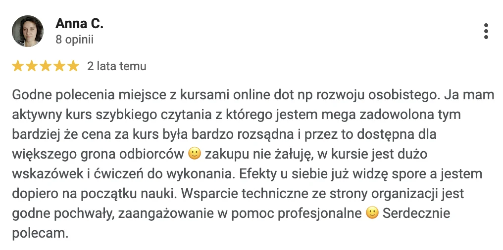
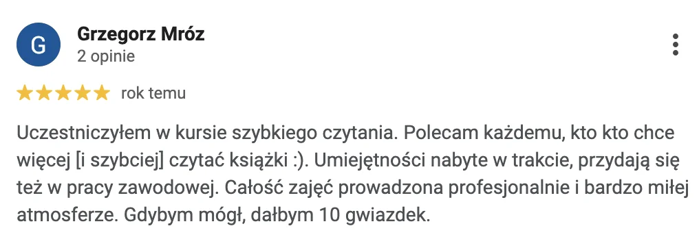
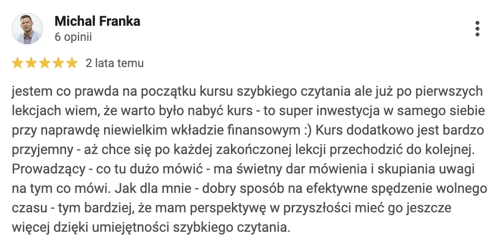
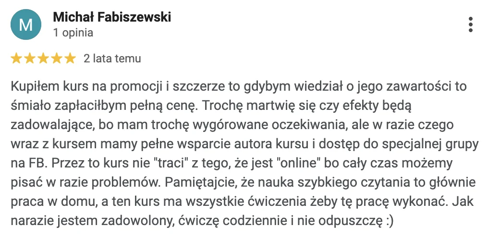
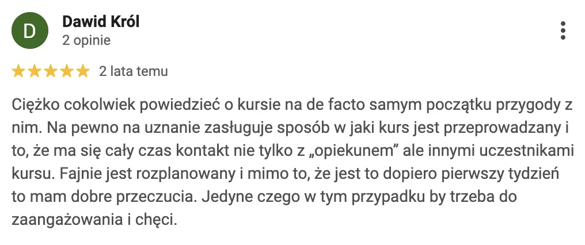
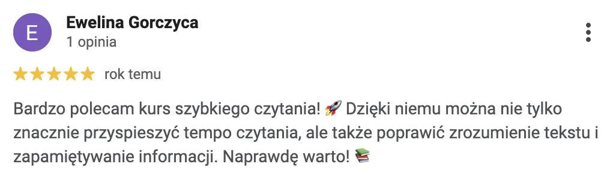
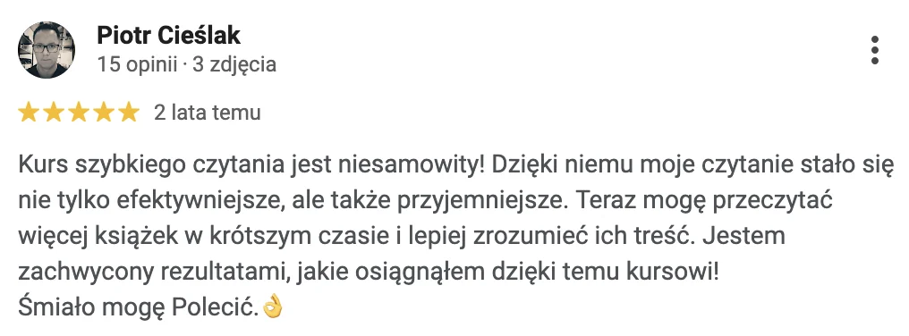
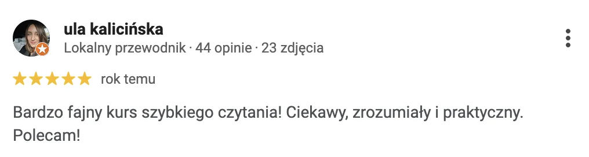
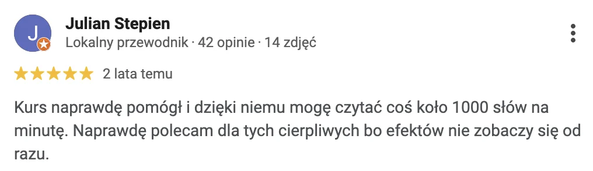
Od sceptyka do entuzjasty
Daliśmy kurs sceptykowi szybkiego czytania
Poza chwaleniem się kursem, daliśmy go do przetestowania sceptykowi szybkiego czytania - znanemu i lubianemu youtuberowi Danielowi Muniowskiemu z kanału Strefa Czytacza.
Przed rozpoczęciem kursu miał dużo wątpliwości, ale po przejściu kursu zmienił zdanie.
Metoda
Jak działa Szybkie Czytanie Online?
Kilka linijek na raz
Nauczysz się czytać kilka linijek tekstu na raz BEZ UTRATY ZROZUMIENIA dzięki ćwiczeniom z rozszerzenia pola widzenia
Alphabet Game
Skupisz się na tekście w zupełnie nowy sposób, ponieważ aktywujesz więcej ośrodków mózgu z pomocą techniki Alphabet Game
Skanowanie i antycypacja
Rozpoznasz w kilka sekund to, o czym jest tekst dzięki skanowaniu i antycypacji
Więcej rozumiesz, więcej pamiętasz
Będziesz lepiej rozumieć i więcej zapamiętywać z każdego czytanego tekstu
Wskaźnik i metoda fotograficzna
Zmienisz swoje podejście do czytania dzięki wykorzystaniu prostych technik takich jak wskaźnik czy metoda fotograficzna
Motywacja w kosmos
Twoja motywacja wystrzeli w kosmos, bo każdą stronę będziesz czytać coraz szybciej
A jak znajdziesz na to czas?
Lekcje są krótkie i konkretne (pierwsza z pomiarem tempa już za Tobą!). Teoria w kursie to niecałe dwie godziny. Techniki ćwiczysz na tekstach, które i tak teraz czytasz.
Program
Twoja droga krok po kroku
siedem przystanków — przejdź się z nami trasą ↓0 — rozrusznik czytania
Rozrusznik czytania
pierwsze 15 minut ze mną
Rozrusznik czytania
pierwsze 15 minut ze mną
W pierwszych 15 minutach ze mną przejdziesz kompletną metodę, która pozwala czytać 2 razy szybciej bez utraty zrozumienia.
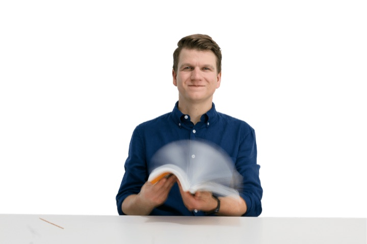
kwadrans — i czytasz dwa razy szybciej bez utraty zrozumienia
1 — wprowadzenie
Wprowadzenie
porządny pomiar tempa
Wprowadzenie
porządny pomiar tempa
Tutaj dowiesz się, jak w pełni wykorzystać materiały zawarte w kursie i zmierzysz (tym razem porządnie) swoje obecne tempo czytania.

tym razem porządny pomiar — masz z czym porównać efekt
2 — rozszerzanie pola widzenia
Rozszerzanie pola widzenia
gimnastyka Twojego oka
Rozszerzanie pola widzenia
gimnastyka Twojego oka
Ten dział poświęcony jest gimnastyce Twojego oka. Dzięki odpowiednim ćwiczeniom będziesz w stanie łapać tekst z trzech linijek na raz.
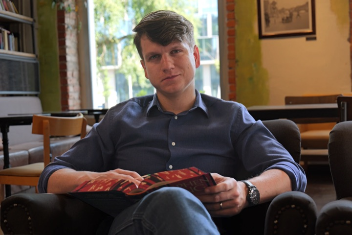
tekst z trzech linijek na raz
3 — koncentracja na tekście
Koncentracja na tekście
laserowe skupienie
Koncentracja na tekście
laserowe skupienie
W tym miejscu nauczysz się technik utrzymania laserowego skupienia na czytanych tekstach. Będziesz w stanie czytać w każdych warunkach.
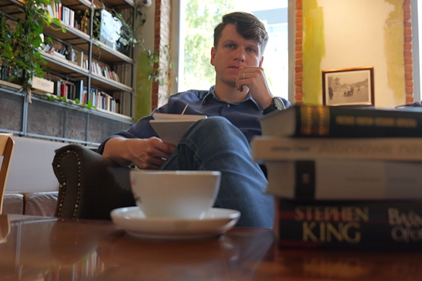
czytasz w każdych warunkach
4 — czytanie poglądowe
Czytanie poglądowe
test z filmu przełożony na książkę
Czytanie poglądowe
test z filmu przełożony na książkę
Łącząc poznane do tej pory techniki zaczniesz chwytać okiem kilka linijek tekstu na raz. To przełożenie znanego Ci testu czytania na książkę.

to, co zrobił test na górze strony — na prawdziwej książce
5 — zrozumienie i zapamiętywanie
Zrozumienie i zapamiętywanie
struktura książki, teksty naukowe
Zrozumienie i zapamiętywanie
struktura książki, teksty naukowe
W tym miejscu nauczysz się przeglądać teksty i odpowiednio rozpracować strukturę książki, żeby wszystko rozumieć nawet przy wysokim tempie. W ramach tego segmentu podzielę się z Tobą swoją metodą na czytanie tekstów naukowych.

moja metoda na teksty naukowe
6 — podsumowanie i bonusy
Podsumowanie i bonusy
jak rozwijać czytanie po kursie
Podsumowanie i bonusy
jak rozwijać czytanie po kursie
Na koniec nauczysz się, jak rozwijać swoje czytanie dalej, już po kursie. Znajdziesz tu m.in. ćwiczenia plenerowe, listę polecanych przeze mnie książek i ostatni test czytania.

ćwiczenia plenerowe, lista polecanych książek i ostatni test
Jakieś pytania? Możesz zadać je pod każdą z lekcji przez cały kurs. Krótko odpiszę a jeśli sprawa jest bardziej złożona, nagram filmik z omówieniem danej kwestii.
Wróćmy na chwilę do
Głupot, które Cię hamują
❌Czytając szybko nic nie zrozumiem i nic nie zapamiętam
Mój kurs to nie tylko sztuczki na podkręcenie czytania, kładę ogromny nacisk na rozumienie i zapamiętywanie tekstu.
Łącząc techniki, które poznasz w kursie będziesz w stanie zapamiętać więcej, niż przy czytaniu tradycyjnym.
Przez cały kurs będziesz sprawdzać zarówno tempo jak i zrozumienie tekstu.
❌Nie będę mieć przyjemności czytając w ten sposób
Kiedy poznasz już wszystkie techniki, będziesz dostosowywać tempo do celu czytania oraz rodzaju czytanego tekstu.
W jednej z lekcji odradzam nawet używanie szybkie czytanie poezji i dramatów romantycznych.
Jednakże w przypadku pozostałych tekstów możesz je czytać szybko - z przyjemnością i ogromną satysfakcją.
❌Oduczę się tradycyjnego czytania
Szybkie czytanie to nowa umiejętność a nie zmiana sposobu czytania na zawsze. Zupełnie tak samo, jak kurs na prawo jazdy nie zabiera Ci możliwości długich spacerów po parku.
✅ Tak, będziesz w stanie z powrotem czytać „wolno”Chociaż nie będziesz chcieć czytać dłużej w ten sposób.
Ponadto po kursie Twoje tradycyjne czytanie i tak będzie szybsze, ze względu na Twoje wyćwiczone przez kurs oczy i poprawę koncentracji.
❌Potrzeba długich lat i wysiłku, żeby opanować tę umiejętność
Wszystkie lekcje trwają krócej, niż 2 odcinki Gry o Tron.
A żeby wystartować kurs z przytupem, przygotowałem rozrusznik do szybkiego czytania, który w kwadrans dwukrotnie przyspieszy Twoje czytanie.
Rekomenduję przejście całego kursu w miesiąc (wariant ambitny) lub 6 tygodni (na spokojnie).
Oba warianty zakładają obejrzenie lekcji i wykonanie ćwiczeń na dowolnie wybranej przez Ciebie książce (poświęcasz średnio 10 minut dziennie).
Ile kosztuje kurs
Szybkie Czytanie Online?
SZYBKIE CZYTANIE ONLINE
600 PAKIETÓW
- Roczny dostęp do kursu i wsparcie
- Autorski skrypt z ćwiczeniami i tekstami
- Bonusowe lekcje i materiały
czyli Szybkie Czytanie Online to tylko 500 złotych
197,-
Najniższa cena z ostatnich 30 dni: 500 zł
To duża zniżka, ale musisz działać szybko, bo mamy tylko 600 pakietów w tej cenie
W pakiecie do kursu podstawowego otrzymasz 5 lekcji bonusowych i kurs rozrusznik czytania
W ramach pakietu otrzymasz:
- Szybkie Czytanie Online - pełen kurs
- Rozrusznik czytania: mini kurs
- 5 lekcji bonusowych
mamy 600 pakietów w cenie 500 zł — 197,- Najniższa cena z ostatnich 30 dni: 500 zł
Kupuję Kurs
Płatność blikiem, przelewem lub kartą.
Wystawiamy faktury.
Wystawiamy faktury.
Więcej o mnie
Piotr Starzyński
Założyciel i Prezes największej organizacji w Polsce zajmującej się efektywną nauką. Złoty medalista i President of the WABA League for Poland (międzynarodowej Ligii Sportów Umysłowych). Obycie z kamerą zawdzięcza nagraniom edukacyjnym w TVP.
Prowadził szkolenia m. in. dla: Google Polska, Erasmus+, Sądu Najwyższego, LifeSkills, Social Wolves, ELSA Warszawa, MeetingPlaner.
Prowadzi szkolenia dla uczniów i nauczycieli - od szkół podstawowych przez instytucje edukacyjne po firmy i międzynarodowe organizacje. Ma na swoim koncie ponad 10 tysięcy godzin przeprowadzonych szkoleń.
Obecnie pracuje na Uniwersytecie Warszawskim nad doktoratem poświęconym wyzwaniom nauczycieli w polskiej szkole.
Jego Fundacja współpracuje z ponad 50 szkołami w całej Polsce, koordynuje projekty w ramach programu Erasmus+ i POWER oraz pomaga nauczycielom i pedagogom. W 2019 roku Fundacja Pięć Plus uzyskała akredytację programu Erasmus+ w dziedzinie kształcenia a przez ostatnie 2 lata działalności online - srebrne klapsy platformy Web To Learn.
Szkoliłem m.in.


Pracowałem dla największych, ale najważniejszy jesteś dla mnie Ty.
Sąd
Najwyższy
Najwyższy
Najczęściej zadawane pytania
Jeśli nadal masz wątpliwości
sprawdź czy nie rozwieją ich poniższe odpowiedzi - a jeśli nie, napisz na kontakt@5plus.edu.pl
Czy dysleksja jest przeszkodą w odbyciu kursu?
Czy dysleksja jest przeszkodą w odbyciu kursu?
W żadnym wypadku! Dysleksja w żadnym stopniu nie przeszkadza w przejściu kursu. Wiele osób z dysleksją techniki szybkiego czytania zachęciły do nauki!
Na jaki czas wykupuję dostęp do kusu?
Na jaki czas wykupuję dostęp do kusu?
Dostęp do wszystkich materiałów otrzymujesz na cały rok. Kurs zajmuje około miesiąca przy 10 minutach dziennie. Wierzymy, że każdy powinien realizować kurs w swoim tempie, a możliwość odświeżenia umiejętności jest bardzo ważna.
Czy możliwy jest zwrot zakupionego kursu?
Czy możliwy jest zwrot zakupionego kursu?
W ciągu 14 dni od kupna możesz bez konsekwencji zrezygnować z zakupu kursu Szybkie Czytanie Online®. Skontaktuj się z nami przez kontakt@5plus.edu.pl a pieniądze znajdą się z powrotem na Twoim koncie w ciągu 7 dni roboczych.
W jaki sposób otrzymam kurs?
W jaki sposób otrzymam kurs?
Dostęp do kursu odbywa się za pośrednictwem naszej platformy. Po założeniu swojego konta otrzymasz dostęp do wszystkich lekcji i skryptu z ćwiczeniami na rozszerzanie pola widzenia.
Szybkie Czytanie Online